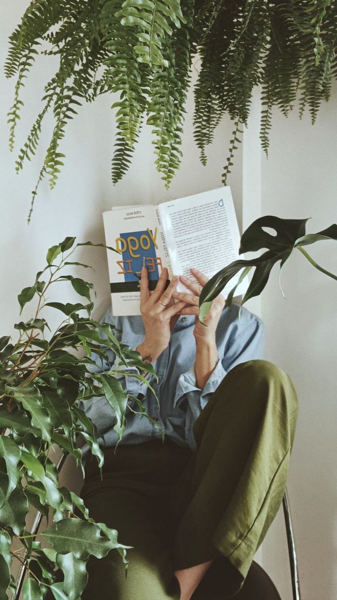

Antroponómadas nace como un proyecto colectivo con la finalidad de dar voz a las palabras hispanohablantes que tejen, crean y resisten a través de los sentipensares antropológicos y orgánicos.

-
Colectiva y Horizontal
Promueve el trabajo colaborativo y el intercambio entre voces diversas del ámbito antropológico, artístico y literario.
-
Interdisciplinaria
Integra textos, arte visual y reflexiones desde distintas áreas del conocimiento y la creación.
-
Latinoamericana e hispanohablante
Da espacio a expresiones y perspectivas que nacen del territorio y la lengua compartida.
-
Orgánica y Sentipensante
Funde emoción y pensamiento, cuerpo y palabra, para explorar la experiencia humana desde lo sensible.
-
Crítica y Resistente
Cuestiona las estructuras dominantes y visibiliza formas alternativas de entender la cultura, la comunidad y el saber.
-
Comunitaria y Viva
Busca fortalecer el tejido social a través de la palabra, el arte y la memoria colectiva.
-
Eco-simbiótica y Regenerativa
Promueve miradas y prácticas que fortalecen la cooperación entre personas, territorios, y otras formas de vida, imaginando futuros sostenibles basados en vínculos simbióticos y cuidados compartidos.
💡 También es un lugar para morritas emprendedoras que quieran dar a conocer sus proyectos y compartirlos
Si te gustaría formar parte de la próxima edición, accede al link para dejarnos tus datos y tu propuesta, así como para consultar las reglas y especificaciones.
Lee nuestras ediciones

01 - Nov 2025
Edición Inaugural

02 - Dic 2025
Simbioceno
Próximamente